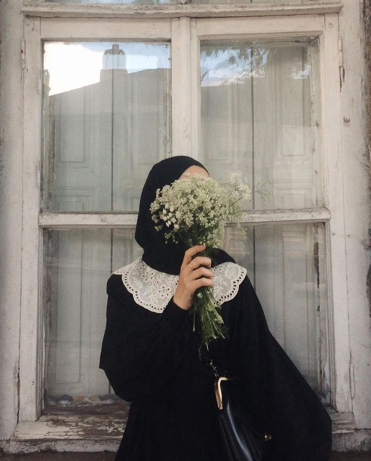

Hi readers! Namaku, Aira Neisya Aqila. Nama yang cukup unik bukan?. Entah karena alasan apa orang tuaku memberi aku dengan nama itu. Mungkin saja orang tuaku memiliki alasan tersendiri. Akan tetapi, yang terpenting adalah aku bisa menjadi diriku yang sekarang.
Sejak di bangku sekolah, aku bukan siswa yang terkenal pintar, juga bukan terkenal bodoh. Orang tuaku tidak pernah memaksaku untuk menjadi yang paling pintar di sekolah. Mama dan papa ku membiarkanku untuk tumbuh dan berkembang secara mandiri namun tetap dalam pengawasan mereka. Terkadang aku merasa aneh dengan cara orang tuaku mendidik aku. Orang tuaku sangat berbeda apabila dibandingkan dengan teman-temanku yang menceritakan tentang orang tuanya. Meskipun begitu mereka adalah orang tua yang terbaik menurutku dan aku sangat bersyukur menjadi bagian dari keluarga ini.
Saat ini aku merupakan mahasiswa baru di salah satu universitas yang cukup terkenal. Tidak jarang orang yang mengatakan bahwa universitas tersebut merupakan universitas yang ketat dalam seleksi tesnya. Dari dulu aku mempunyai ambisi untuk masuk universitas itu. Padahal, orang tuaku tidak pernah memaksaku untuk menjadi bagian dari kampus itu. Sifatku yang sulit untuk aku hilangkan yaitu keras terhadap diri sendiri. Aku keras terhadap diriku sendiri dan memaksakan diriku untuk mencapai apa yang aku mau. Apabila kemauanku tidak bisa aku capai, sifat ini aku menjadi bumerang bagi diriku sendiri. Bahkan, sifat ini bisa menjadi bom waktu.
Aku menjalani hariku sebagai mahasiswa program studi Ilmu Perpustakaan. Aku yakin, kamu pasti baru mendengar jurusan itu. Kalau ditanya kenapa aku memilih jurusan ini, mungkin akan sedikit rumit. Aku menjadi mahasiswa Ilmu Perpustakaan terhitung hampir satu semester. Aku merasa jurusan ini tidak cocok diberi nama Ilmu Perpustakaan karena yang aku pelajari tidak hanya cakupan bidang perpustakaan, namun juga cakupan bidang yang berkaitan dengan informasi.
Salah satu fakta tentang diriku adalah aku menyukai travelling. Travelling yang aku maksud bukan ke tempat yang banyak pemandangan alam tapi traveling walaupun hanya sekadar melihat pemandangan kota. Aku menyukai jalan-jalan walaupun hanya melihat pemandangan kota dari kaca jendela TransJakarta. Bagiku, melihat kendaraan dan gedung-gedung tinggi di Jakarta cukup untuk membuat aku senang. Aku sering kali melakukan hal ini dengan teman-temanku. Makan di pinggir jalan, menikmati transportasi umum dan hal-hal kecil lainnya.